Beginner's guide
1. First launch: the four tabs
KnowledgeBrain works right away — no sign-up. The bottom bar has four tabs:
- Ask — chat with your knowledge base.
- Capture — put new content in.
- Library — browse and search everything you've saved.
- Settings — AI provider, iCloud sync, export.
2. Put content in (Capture)
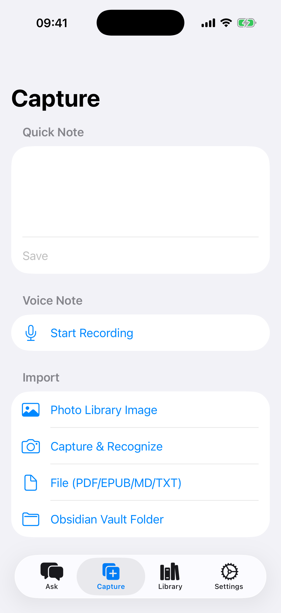
Open the Capture tab and pick whichever fits:
- Type a note — write in the "Quick note" box at the top, then tap Save.
- Voice memo — tap Start recording, talk, tap stop. Your speech is transcribed into text right on your phone.
- Files — tap Files (PDF/EPUB/MD/TXT) and pick a document from the Files app. Great for papers and e-books.
- Photo text (OCR) — tap Photo library (OCR) to turn text in a picture into a searchable note.
- Obsidian — tap Obsidian Vault folder to import an existing vault in one go.
- From other apps — in Safari or any app, tap the system Share button and choose KnowledgeBrain. Saved in one tap.
Everything you save is automatically summarized, tagged and made searchable in the background. Just keep collecting.
3. Ask questions (Ask)
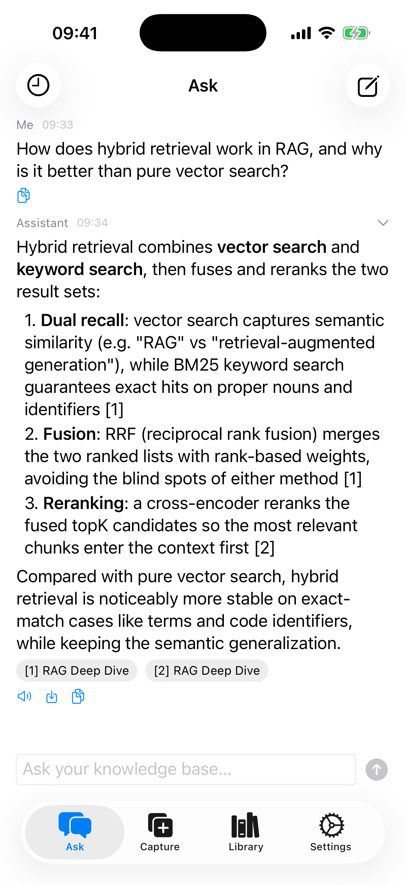
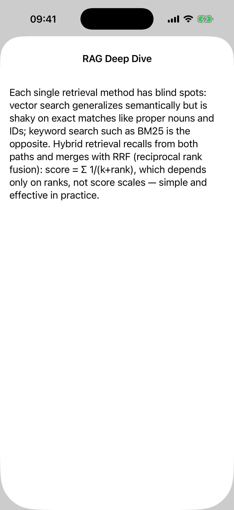
- Open the Ask tab and type your question in the box at the bottom — plain language is fine.
- The answer is built from your library. At the bottom of each answer you'll see chips like [1] RAG notes.
- Tap a chip to see the exact original passage the answer came from — so you can always verify.
- The speaker icon reads the answer aloud; the copy icon copies it.
4. Find things (Library)
The Library tab lists everything you've saved. The search box at the top is a semantic search: type the rough meaning (for example "that article about databases") and it will find it — no need to remember exact words. Tap any entry to read the full text.
5. Optional: connect a cloud AI (your own API key)
On devices with Apple Intelligence, answers can be generated fully on-device and you can skip this. Otherwise, or if you want stronger answers, bring your own key:
- Get an API key from a provider's website (e.g. DeepSeek, Zhipu, Kimi — it's like a password for their AI service).
- In KnowledgeBrain go to Settings → Cloud API → Add configuration.
- Pick your provider, paste the API Key, and choose a model (the list loads automatically once the key is in).
- Tap Test connection — when it says success, tap Save.
- Back in the list, tap the configuration to make it active (green checkmark).
Your key is stored in the iOS Keychain and is only ever sent to the provider you configured. Usage is billed by your provider, not by us.
6. Sync and backup
- Sync between devices — your library syncs automatically through your private iCloud. In Settings → iCloud sync you can also tap Sync now (full). Note: AI configurations are not synced, set them up per device.
- Export / backup — in Settings, tap Export Markdown to iCloud Drive to get all your notes as plain Markdown files. Your knowledge is never locked in.
FAQ
- Do I need an account?
No. Open the app and start using it.
- Does it work offline?
Browsing, searching and capturing work offline. Cloud AI answers need internet; on-device AI (Apple Intelligence) does not.
- Can the developer see my notes?
No. Data lives on your devices and in your private iCloud database, which the developer cannot access.
- Is my API key safe?
It's stored in the system Keychain and sent only to the provider you chose.
- Which languages does the app speak?
English, 简体中文, 繁體中文 and 日本語 — it follows your iPhone's language.
Still stuck? Email info@pixelart.tech.
新手使用教学
1. 第一次打开:认识四个标签页
KnowledgeBrain 装好后直接就能用,不需要注册。底部有四个标签:
- 问答——和你的知识库聊天。
- 收集——把新内容放进来。
- 库——浏览和搜索你存过的所有内容。
- 设置——AI 提供方、iCloud 同步、导出。
2. 把内容放进来(收集)
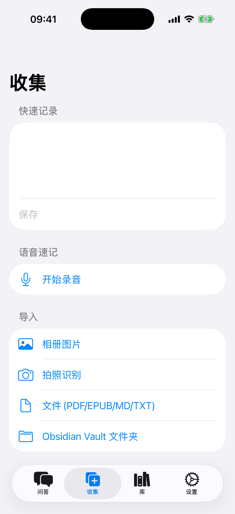
打开收集标签,哪种方便用哪种:
- 打字记录——在顶部「快速记录」框里写,写完点保存。
- 语音速记——点开始录音,说完点停止。语音会自动在手机上转成文字。
- 导入文件——点文件 (PDF/EPUB/MD/TXT),从「文件」App 里选文档,适合论文和电子书。
- 图片识字(OCR)——点相册图片 (OCR),把照片里的文字变成可搜索的笔记。
- Obsidian 用户——点Obsidian Vault 文件夹,整个库一次导入。
- 从别的 App 收藏——在 Safari 或任何 App 里点系统分享按钮,选 KnowledgeBrain,一键保存。
存进来的内容会自动生成摘要、打上标签并建立搜索索引。只管往里收,剩下的交给它。
3. 开口提问(问答)
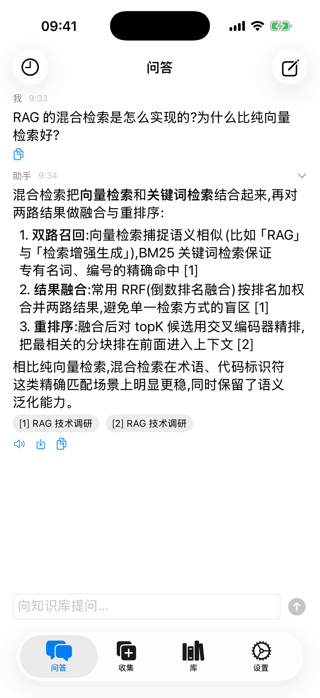
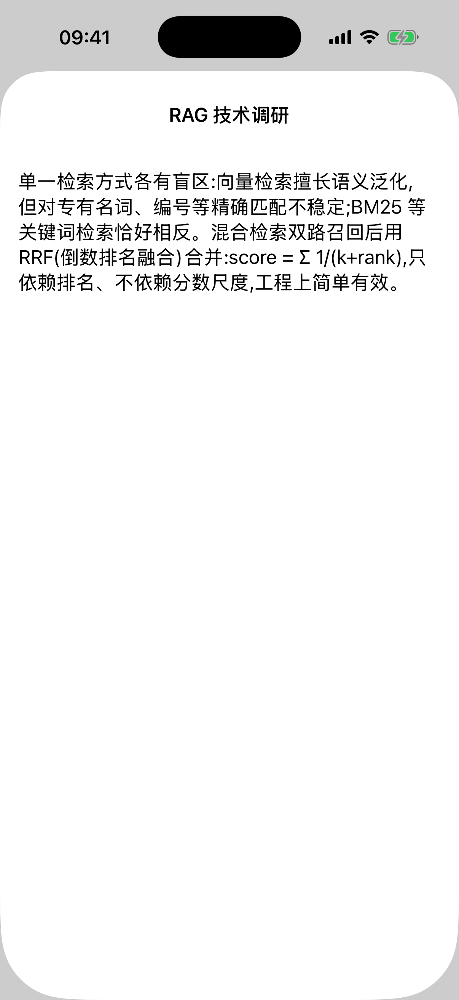
- 打开问答标签,在底部输入框里写下你的问题——大白话就行。
- 答案是基于你自己的知识库生成的。每个答案末尾都有 [1] RAG 技术调研 这样的来源标记。
- 点一下来源标记,就能看到答案依据的原文段落——随时可以核对。
- 答案下方的喇叭图标可以朗读,旁边的图标可以复制。
4. 找东西(库)
库标签里列出了你存的所有内容。顶部的搜索框是语义搜索:输入大概意思(比如「那篇讲数据库的文章」)就能找到,不用记住原话。点任意条目可以看全文。
5. 可选:接入云端 AI(自己的 API Key)
在支持 Apple Intelligence 的设备上,答案可以完全在本机生成,这步可以跳过。其他情况,或者想要更强的回答,可以接入自己的 Key:
- 先去服务商官网申请一个 API Key(比如 DeepSeek、智谱、Kimi——可以理解成调用他们 AI 服务的密码)。
- 在 KnowledgeBrain 里进入设置 → 云端 API → 添加配置。
- 选择你的提供商,粘贴 API Key,再选一个模型(填好 Key 后模型列表会自动加载)。
- 点测试连接,显示成功后点保存。
- 回到列表,点一下这份配置让它生效(出现绿色勾)。
Key 存在 iOS 系统钥匙串里,只会发往你自己配置的服务商。调用费用由服务商收取,与我们无关。
6. 同步和备份
- 多设备同步——知识库会通过你自己的 iCloud 私有数据库自动同步。也可以在设置 → iCloud 同步里点立即同步(全量)。注意:AI 配置不会同步,每台设备单独设置。
- 导出备份——在设置里点导出 Markdown 到 iCloud Drive,全部笔记会变成普通 Markdown 文件。你的知识永远不被锁定。
常见问题
- 需要注册账号吗?
不用,打开 App 直接用。
- 离线能用吗?
浏览、搜索、收集都可以离线。云端 AI 回答需要联网;本机 AI(Apple Intelligence)不需要。
- 开发者能看到我的笔记吗?
不能。数据在你的设备和你自己的 iCloud 私有数据库里,开发者无权访问。
- API Key 安全吗?
存在系统钥匙串,只发往你选择的服务商。
- 支持哪些界面语言?
English、简体中文、繁體中文、日本語,跟随 iPhone 系统语言。
还有问题?发邮件到 info@pixelart.tech。
新手使用教學
1. 第一次打開:認識四個標籤頁
KnowledgeBrain 裝好後直接就能用,不需要註冊。底部有四個標籤:
- 問答——和你的知識庫聊天。
- 收集——把新內容放進來。
- 庫——瀏覽和搜尋你存過的所有內容。
- 設定——AI 提供方、iCloud 同步、匯出。
2. 把內容放進來(收集)
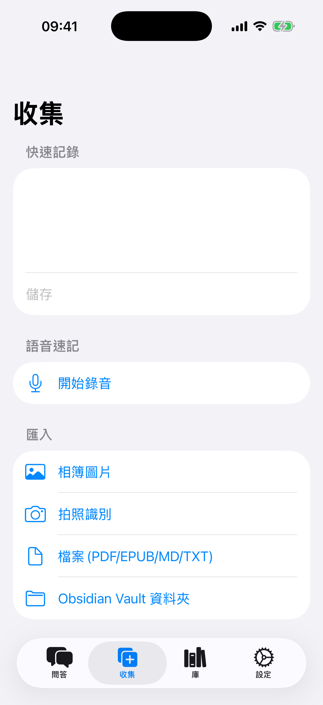
打開收集標籤,哪種方便用哪種:
- 打字記錄——在頂部「快速記錄」框裡寫,寫完點儲存。
- 語音速記——點開始錄音,說完點停止。語音會自動在手機上轉成文字。
- 匯入檔案——點檔案 (PDF/EPUB/MD/TXT),從「檔案」App 裡選文件,適合論文和電子書。
- 圖片識字(OCR)——點相簿圖片 (OCR),把照片裡的文字變成可搜尋的筆記。
- Obsidian 用戶——點Obsidian Vault 資料夾,整個庫一次匯入。
- 從別的 App 收藏——在 Safari 或任何 App 裡點系統分享按鈕,選 KnowledgeBrain,一鍵儲存。
存進來的內容會自動產生摘要、打上標籤並建立搜尋索引。只管往裡收,剩下的交給它。
3. 開口提問(問答)
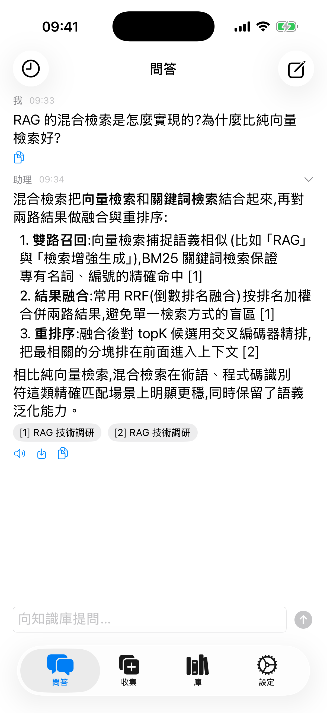
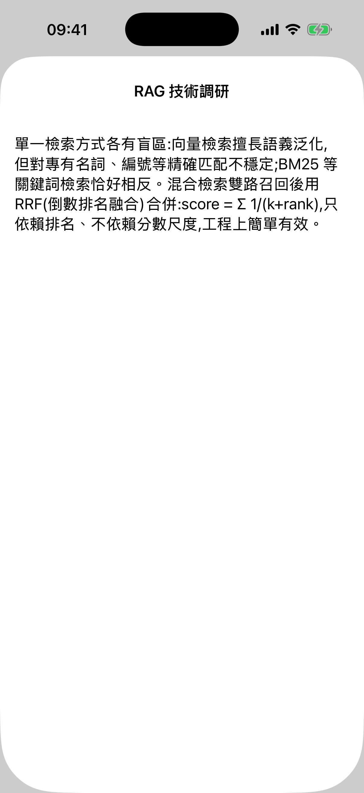
- 打開問答標籤,在底部輸入框裡寫下你的問題——大白話就行。
- 答案是基於你自己的知識庫產生的。每個答案末尾都有 [1] RAG 技術調研 這樣的來源標記。
- 點一下來源標記,就能看到答案依據的原文段落——隨時可以核對。
- 答案下方的喇叭圖示可以朗讀,旁邊的圖示可以複製。
4. 找東西(庫)
庫標籤裡列出了你存的所有內容。頂部的搜尋框是語義搜尋:輸入大概意思(比如「那篇講資料庫的文章」)就能找到,不用記住原話。點任意條目可以看全文。
5. 可選:接入雲端 AI(自己的 API Key)
在支援 Apple Intelligence 的裝置上,答案可以完全在本機產生,這步可以跳過。其他情況,或者想要更強的回答,可以接入自己的 Key:
- 先去服務商官網申請一個 API Key(比如 DeepSeek、智譜、Kimi——可以理解成調用他們 AI 服務的密碼)。
- 在 KnowledgeBrain 裡進入設定 → 雲端 API → 加入設定。
- 選擇你的提供商,貼上 API Key,再選一個模型(填好 Key 後模型列表會自動載入)。
- 點測試連線,顯示成功後點儲存。
- 回到列表,點一下這份設定讓它生效(出現綠色勾)。
Key 存在 iOS 系統鑰匙圈裡,只會發往你自己設定的服務商。調用費用由服務商收取,與我們無關。
6. 同步和備份
- 多裝置同步——知識庫會透過你自己的 iCloud 私有資料庫自動同步。也可以在設定 → iCloud 同步裡點立即同步(全量)。注意:AI 設定不會同步,每台裝置單獨設定。
- 匯出備份——在設定裡點匯出 Markdown 到 iCloud Drive,全部筆記會變成普通 Markdown 檔案。你的知識永遠不被鎖定。
常見問題
- 需要註冊帳號嗎?
不用,打開 App 直接用。
- 離線能用嗎?
瀏覽、搜尋、收集都可以離線。雲端 AI 回答需要連網;本機 AI(Apple Intelligence)不需要。
- 開發者能看到我的筆記嗎?
不能。資料在你的裝置和你自己的 iCloud 私有資料庫裡,開發者無權存取。
- API Key 安全嗎?
存在系統鑰匙圈,只發往你選擇的服務商。
- 支援哪些介面語言?
English、简体中文、繁體中文、日本語,跟隨 iPhone 系統語言。
還有問題?寄信到 info@pixelart.tech。
初心者ガイド
1. 初めて開いたら:4つのタブ
KnowledgeBrain はインストール後すぐ使えます。登録は不要です。下部に4つのタブがあります:
- 質問——知識ベースと会話します。
- 取り込み——新しいコンテンツを入れます。
- ライブラリ——保存したすべてを閲覧・検索します。
- 設定——AI プロバイダー、iCloud 同期、エクスポート。
2. コンテンツを入れる(取り込み)
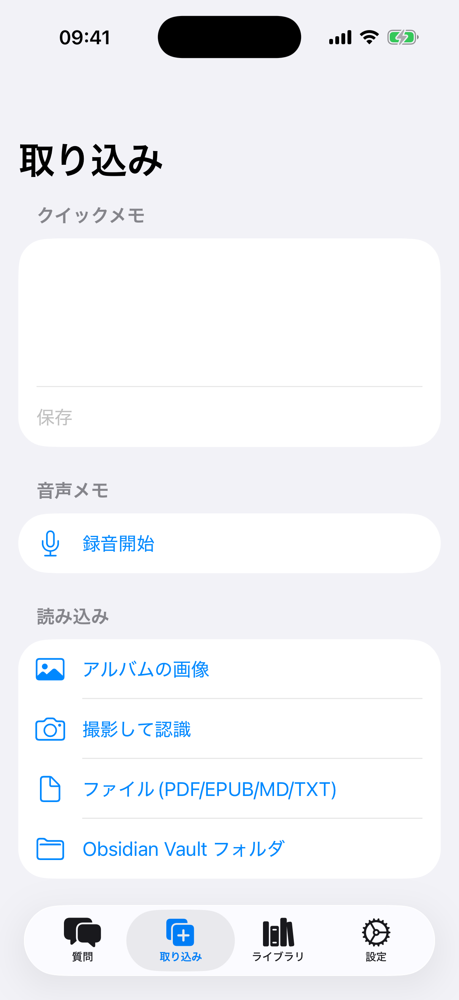
取り込みタブを開いて、好きな方法を選びます:
- テキストメモ——上部の「クイックメモ」欄に書いて、保存をタップ。
- 音声メモ——録音開始をタップして話し、停止をタップ。音声は iPhone 上で自動的に文字起こしされます。
- ファイル——ファイル (PDF/EPUB/MD/TXT) をタップし、「ファイル」App から書類を選択。論文や電子書籍に最適です。
- 写真の文字(OCR)——フォトライブラリ (OCR) をタップすると、写真内の文字が検索可能なノートになります。
- Obsidian——Obsidian Vault フォルダ をタップして、既存の Vault をまとめて読み込めます。
- 他のアプリから——Safari などでシステムの共有ボタンをタップし、KnowledgeBrain を選択。ワンタップで保存できます。
保存した内容は自動で要約・タグ付け・検索インデックス化されます。どんどん集めるだけでOKです。
3. 質問する(質問タブ)
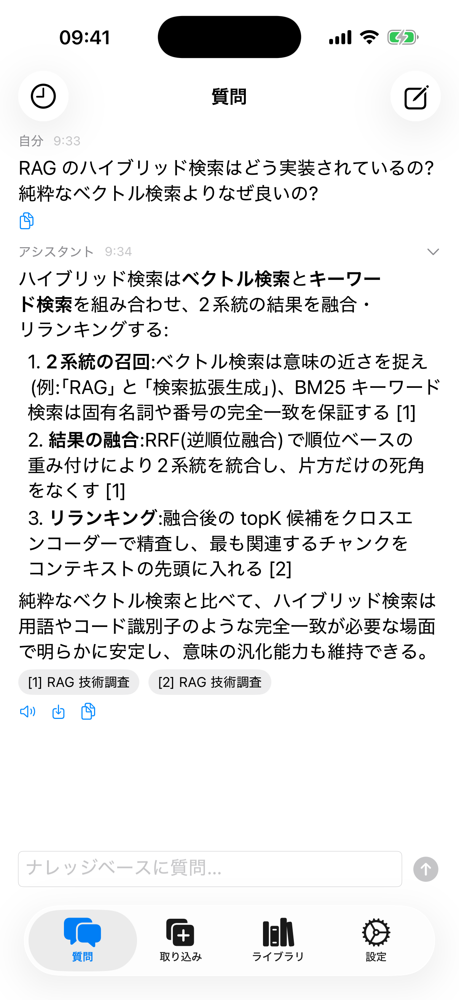
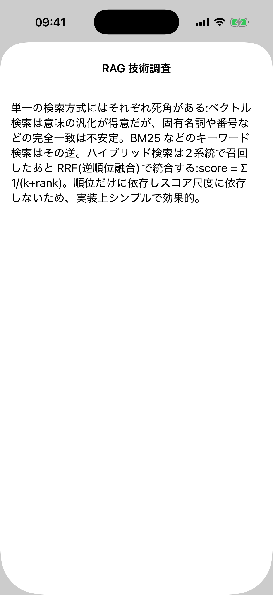
- 質問タブを開き、下部の入力欄に質問を書きます——普段の言葉で大丈夫です。
- 回答はあなた自身の知識ベースから生成されます。回答の末尾には [1] RAG 調査メモ のような引用チップが付きます。
- チップをタップすると、回答の根拠となった原文の箇所が表示されます——いつでも確認できます。
- スピーカーアイコンで読み上げ、隣のアイコンでコピーできます。
4. 探す(ライブラリ)
ライブラリタブには保存したすべてが並びます。上部の検索ボックスはセマンティック検索:おおまかな意味(例:「データベースについての記事」)を入力するだけで見つかります。正確な言葉を覚えている必要はありません。項目をタップすると全文を読めます。
5. 任意:クラウド AI を接続(自分の API キー)
Apple Intelligence 搭載デバイスでは回答を完全にオンデバイスで生成できるので、この手順は不要です。それ以外の場合や、より高性能な回答が欲しい場合は、自分のキーを接続できます:
- まずプロバイダーの公式サイトで API キーを取得します(DeepSeek、Zhipu、Kimi など——AI サービスを使うためのパスワードのようなものです)。
- KnowledgeBrain で設定 → クラウド API → 設定を追加を開きます。
- プロバイダーを選び、API キーを貼り付け、モデルを選びます(キーを入れるとモデル一覧が自動で読み込まれます)。
- 接続テストをタップし、成功と表示されたら保存。
- 一覧に戻り、その設定をタップして有効にします(緑のチェックが付きます)。
キーは iOS キーチェーンに保存され、設定したプロバイダーにだけ送信されます。利用料金はプロバイダーからの請求で、私どもは関与しません。
6. 同期とバックアップ
- デバイス間同期——ライブラリはあなたのプライベートな iCloud データベースを通じて自動同期されます。設定 → iCloud 同期の今すぐ同期(全量)も使えます。なお、AI 設定は同期されないので、デバイスごとに設定してください。
- エクスポート/バックアップ——設定のMarkdown を iCloud Drive にエクスポートをタップすると、全ノートが通常の Markdown ファイルになります。知識がロックインされることはありません。
よくある質問
- アカウントは必要?
不要です。アプリを開いてすぐ使えます。
- オフラインで使える?
閲覧・検索・取り込みはオフラインで動作します。クラウド AI の回答には通信が必要ですが、オンデバイス AI(Apple Intelligence)は不要です。
- 開発者にノートを見られる?
いいえ。データはあなたのデバイスとプライベートな iCloud データベースにあり、開発者はアクセスできません。
- API キーは安全?
システムのキーチェーンに保存され、選択したプロバイダーにだけ送信されます。
- 対応言語は?
English、简体中文、繁體中文、日本語——iPhone の言語設定に従います。
まだ困っていますか?info@pixelart.tech までメールしてください。